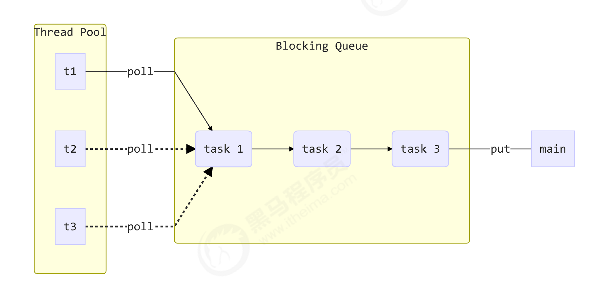
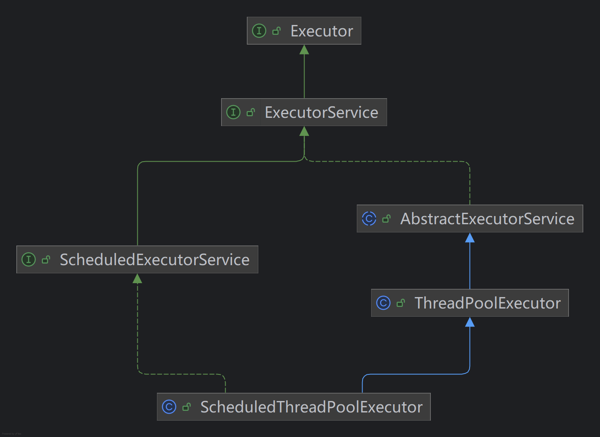
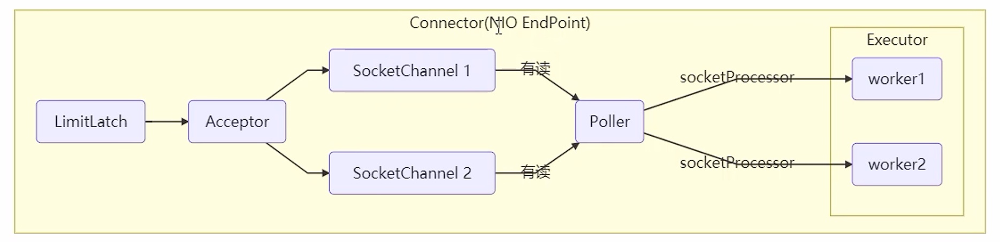
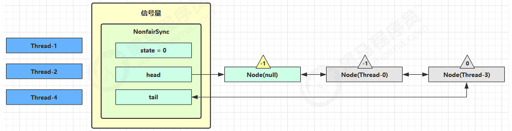
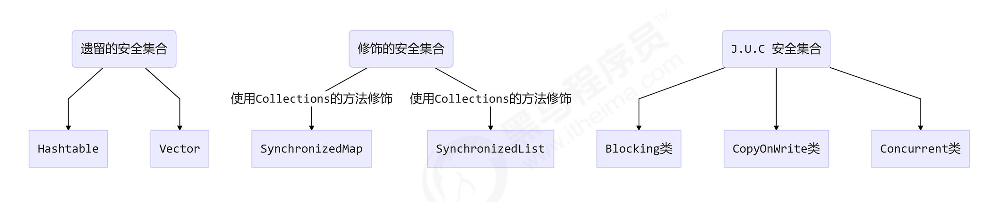

并发工具
线程池¶
线程池是并发编程中非常重要的一个概念，它通过复用线程来执行多个任务，避免了频繁创建和销毁线程的开销，提高了系统的性能和响应速度。Java 提供了丰富的线程池实现，本文将介绍线程池的基本概念、工作原理以及常见的线程池类型。
自定义线程池¶

示例代码：
ThreadPool threadPoolExecutor = ThreadPool.builder()
.coreSize(2)
.timeout(10, TimeUnit.SECONDS)
.capacity(10)
.rejectPolicy((queue, task) -> {
log.info("任务 {} 被拒绝", task);
}).build();
for (int i = 0; i < 15; i++) {
int k = i;
threadPoolExecutor.execute(() -> {
try {
Thread.sleep(1000);
} catch (InterruptedException e) {
throw new RuntimeException(e);
}
log.info("执行任务 {}", k);
});
}
拒绝策略（函数式接口）¶
拒绝策略是指当线程池和任务队列都满了之后，如何处理新提交的任务。
/**
* 拒绝策略接口
*
* @param <T>
*/
@FunctionalInterface
interface RejectPolicy<T> {
void reject(BlockingQueue<T> queue, T task);
}
阻塞式任务队列¶
任务队列是用来存放待执行任务的容器，当线程池中的线程都在忙碌时，新提交的任务会被放入任务队列中等待执行。
@Slf4j
class BlockingQueue<T> {
/**
* 任务队列
*/
private final Deque<T> queue = new ArrayDeque<>();
/**
* 队列锁
*/
public ReentrantLock lock = new ReentrantLock();
/**
* 生产者条件变量
*/
private final Condition fullWaitSet = lock.newCondition();
/**
* 消费者条件变量
*/
private final Condition emptyWaitSet = lock.newCondition();
/**
* 队列容量
*/
private final int capacity;
public BlockingQueue(int capacity) {
this.capacity = capacity;
}
/**
* 阻塞超时获取
*/
public T poll(long timeout, TimeUnit unit) {
lock.lock();
try {
long nanos = unit.toNanos(timeout);
while (queue.isEmpty()) {
try {
// 超时返回
if (nanos <= 0) {
return null;
}
// awaitNanos 返回剩余时间
nanos = emptyWaitSet.awaitNanos(nanos);
} catch (InterruptedException e) {
throw new RuntimeException(e);
}
}
fullWaitSet.signal();
log.info("取出任务 {}", queue.peek());
return queue.removeFirst();
} finally {
lock.unlock();
}
}
/**
* 阻塞获取
*/
public T take() {
lock.lock();
try {
while (queue.isEmpty()) {
try {
emptyWaitSet.await();
} catch (InterruptedException e) {
throw new RuntimeException(e);
}
}
fullWaitSet.signal();
log.info("取出任务 {}", queue.peek());
return queue.removeFirst();
} finally {
lock.unlock();
}
}
/**
* 尝试添加任务
*
* @param rejectPolicy 拒绝策略
* @param task 任务
*/
public void tryPut(RejectPolicy<T> rejectPolicy, T task) {
lock.lock();
try {
if (queue.size() == capacity) {
rejectPolicy.reject(this, task);
} else {
queue.addLast(task);
emptyWaitSet.signal();
}
} finally {
lock.unlock();
}
}
/**
* 阻塞添加
*/
public void put(T task) {
lock.lock();
try {
while (queue.size() == capacity) {
try {
log.info("队列已满，等待消费者消费");
fullWaitSet.await();
} catch (InterruptedException e) {
throw new RuntimeException(e);
}
}
log.info("添加任务 {}", task);
queue.addLast(task);
emptyWaitSet.signal();
} finally {
lock.unlock();
}
}
/**
* 超时阻塞添加
*
* @return true 成功 false 超时失败
*/
public boolean offer(T task, long timeout, TimeUnit unit) {
lock.lock();
try {
long nanos = unit.toNanos(timeout);
while (queue.size() == capacity) {
try {
log.info("队列已满，等待消费者消费");
if (nanos <= 0) {
log.info("添加任务超时");
return false;
}
nanos = fullWaitSet.awaitNanos(nanos);
} catch (InterruptedException e) {
throw new RuntimeException(e);
}
}
log.info("添加任务 {}", task);
queue.addLast(task);
emptyWaitSet.signal();
return true;
} finally {
lock.unlock();
}
}
public int size() {
lock.lock();
try {
return queue.size();
} finally {
lock.unlock();
}
}
}
线程池¶
@Slf4j
class ThreadPool {
/**
* 任务队列
*/
private final BlockingQueue<Runnable> taskQueue;
/**
* 执行线程队列
*/
private final HashSet<Worker> workers = new HashSet<>();
/**
* 核心线程数
*/
private final int coreSize;
/**
* 超时时间
*/
private final long timeout;
/**
* 超时时间单位
*/
private final TimeUnit unit;
/**
* 拒绝策略
*/
private final RejectPolicy<Runnable> rejectPolicy;
private ThreadPool(Builder builder) {
this.coreSize = builder.coreSize;
this.timeout = builder.timeout;
this.unit = builder.unit;
this.rejectPolicy = builder.rejectPolicy;
this.taskQueue = new BlockingQueue<>(builder.capacity);
}
public static Builder builder() {
return new Builder();
}
/**
* Builder构建器
*/
public static class Builder {
private int coreSize = 5; // 默认核心线程数
private long timeout = 5; // 默认超时时间
private TimeUnit unit = TimeUnit.SECONDS; // 默认时间单位
private RejectPolicy<Runnable> rejectPolicy = (queue, task) -> {
log.info("任务 {} 被拒绝", task);
}; // 默认拒绝策略
private int capacity = 100; // 默认任务队列容量
public Builder coreSize(int coreSize) {
this.coreSize = coreSize;
return this;
}
public Builder timeout(long timeout, TimeUnit unit) {
this.timeout = timeout;
this.unit = unit;
return this;
}
public Builder rejectPolicy(RejectPolicy<Runnable> rejectPolicy) {
this.rejectPolicy = rejectPolicy;
return this;
}
public Builder capacity(int capacity) {
this.capacity = capacity;
return this;
}
public ThreadPool build() {
return new ThreadPool(this);
}
}
/**
* 执行任务
*
* @param task 任务
*/
public synchronized void execute(Runnable task) {
if (workers.size() < coreSize) {
Worker worker = new Worker(task);
synchronized (workers) {
workers.add(worker);
}
worker.start();
} else {
// 队列已满，尝试拒绝策略
taskQueue.tryPut(rejectPolicy, task);
}
}
/**
* 工作线程
*/
class Worker extends Thread {
private Runnable task;
public Worker(Runnable task) {
this.task = task;
}
@SneakyThrows
@Override
public void run() {
while (task != null || (task = taskQueue.poll(timeout, unit)) != null) {
try {
task.run();
} catch (Exception e) {
e.printStackTrace();
} finally {
task = null;
}
}
synchronized (workers) {
log.info("移除线程 {}", this);
workers.remove(this);
}
}
}
}
ThreadPoolExecutor¶

线程状态¶
ThreadPoolExecutor 使用 int 的高 3 位来表示线程池状态，低 29 位表示线程数量
| 状态 | 高3位 | 说明 | 影响 |
|---|---|---|---|
| RUNNING | 111 | 线程池正常运行状态，可以接收新任务并处理队列中的任务 | 新任务会被接受并执行 |
| SHUTDOWN | 000 | 关闭状态，不再接收新任务，但会处理队列中已存在的任务 | 新任务被拒绝，队列任务继续执行 |
| STOP | 001 | 停止状态，不再接收新任务，也不处理队列中的任务，并中断正在执行的任务 | 新任务被拒绝，队列任务不执行，中断工作线程 |
| TIDYING | 010 | 整理状态，所有任务已终止，workerCount=0，将执行terminated()钩子方法 | 过渡状态，即将变为TERMINATED |
| TERMINATED | 011 | 终止状态，terminated()方法已完成 | 线程池完全结束 |
这些信息存储在一个原子变量 ctl 中，目的是将线程池状态与线程个数合二为一，这样就可以用一次 cas 原子操作 进行赋值
// c 为旧值， ctlOf 返回结果为新值
ctl.compareAndSet(c, ctlOf(targetState, workerCountOf(c))));
// rs 为高 3 位代表线程池状态， wc 为低 29 位代表线程个数，ctl 是合并它们
private static int ctlOf(int rs, int wc) { return rs | wc; }
构造方法¶
public ThreadPoolExecutor(int corePoolSize,
int maximumPoolSize,
long keepAliveTime,
TimeUnit unit,
BlockingQueue<Runnable> workQueue,
RejectedExecutionHandler handler)
corePoolSize核心线程数目 (最多保留的线程数)maximumPoolSize最大线程数目keepAliveTime生存时间 - 针对救急线程unit时间单位 - 针对救急线程workQueue阻塞队列threadFactory线程工厂 - 可以为线程创建时指定更有意义的名字handler拒绝策略
核心线程 vs 救急线程
| 特性 | 核心线程 (Core Threads) | 救急线程 (救急线程/非核心线程) |
|---|---|---|
| 创建时机 | 线程池初始化时预创建或按需创建 | 当任务数 > (核心线程数+队列容量)时创建 |
| 数量控制 | 由corePoolSize参数决定 |
由maximumPoolSize - corePoolSize决定 |
| 存活时间 | 默认长期存活(即使空闲) | 空闲超过keepAliveTime后被回收 |
| 回收策略 | allowCoreThreadTimeOut=true时可被回收 |
总是可被回收 |
| 任务处理优先级 | 优先使用核心线程处理任务 | 队列满且核心线程忙时才会使用 |
| 典型应用场景 | 维持基本并发能力 | 应对突发流量 |
新任务到达时:
1. 优先使用核心线程处理
↓ (核心线程全忙)
2. 任务进入工作队列
↓ (队列已满)
3. 创建救急线程处理
↓ (达到maximumPoolSize)
4. 触发拒绝策略
拒绝策略¶
| 策略名称 | 对应类 | 行为描述 | 适用场景 |
|---|---|---|---|
| AbortPolicy | AbortPolicy |
直接抛出RejectedExecutionException异常 | 需要明确知道任务被拒绝的场景（默认策略） |
| CallerRunsPolicy | CallerRunsPolicy |
由调用者线程直接执行被拒绝的任务 | 不希望丢失任务且可以接受任务执行变慢的场景 |
| DiscardPolicy | DiscardPolicy |
静默丢弃被拒绝的任务，不抛出异常也不执行 | 允许丢弃部分任务的场景 |
| DiscardOldestPolicy | DiscardOldestPolicy |
丢弃队列中最旧的任务，然后尝试重新提交当前任务 | 允许丢弃旧任务，希望尽量执行新任务的场景 |
| 自定义拒绝策略 | 实现RejectedExecutionHandler接口 |
根据业务需求自定义处理被拒绝任务的逻辑 | 需要特殊处理被拒绝任务的场景 |
Executors工厂方法¶
newFixedThreadPool¶
public static ExecutorService newFixedThreadPool(int nThreads) {
return new ThreadPoolExecutor(nThreads, nThreads,
0L, TimeUnit.MILLISECONDS,
new LinkedBlockingQueue<Runnable>());
}
Note
- 特点：
- 固定线程数（核心线程=最大线程）
- 无界任务队列（
LinkedBlockingQueue） - 适合稳定负载场景
- 注意：
- 任务堆积可能导致OOM
newCachedThreadPool¶
public static ExecutorService newCachedThreadPool() {
return new ThreadPoolExecutor(0, Integer.MAX_VALUE,
60L, TimeUnit.SECONDS,
new SynchronousQueue<Runnable>());
}
Note
- 特点：
- 线程数无上限（
Integer.MAX_VALUE） - 空闲线程60秒后回收
- 适合大量短生命周期的异步任务
- 线程数无上限（
- 注意：
- 可能创建过多线程导致OOM
newSingleThreadExecutor¶
public static ExecutorService newSingleThreadExecutor(ThreadFactory threadFactory) {
return new FinalizableDelegatedExecutorService
(new ThreadPoolExecutor(1, 1,
0L, TimeUnit.MILLISECONDS,
new LinkedBlockingQueue<Runnable>(),
threadFactory));
}
Note
- 特点：
- 保证任务顺序执行（FIFO）
- 适用于需要严格串行化的场景
注意
- 自己创建一个单线程串行执行任务，如果任务执行失败而终止那么没有任何补救措施，而线程池还会新建一个线程，保证池的正常工作
- Executors.newSingleThreadExecutor() 线程个数始终为1，不能修改
- FinalizableDelegatedExecutorService 应用的是装饰器模式，只对外暴露了 ExecutorService 接口，因此不能调用 ThreadPoolExecutor 中特有的方法
- Executors.newFixedThreadPool(1) 初始时为1，以后还可以修改
- 对外暴露的是 ThreadPoolExecutor 对象，可以强转后调用 setCorePoolSize 等方法进行修改
提交任务¶
// 执行任务
void execute(Runnable command);
// 提交任务 task，用返回值 Future 获得任务执行结果
<T> Future<T> submit(Callable<T> task);
// 提交 tasks 中所有任务
<T> List<Future<T>> invokeAll(Collection<? extends Callable<T>> tasks) throws InterruptedException;
// 提交 tasks 中所有任务，带超时时间
<T> List<Future<T>> invokeAll(Collection<? extends Callable<T>> tasks,long timeout, TimeUnit unit)
throws InterruptedException;
// 提交 tasks 中所有任务，哪个任务先成功执行完毕，返回此任务执行结果，其它任务取消
<T> T invokeAny(Collection<? extends Callable<T>> tasks)
throws InterruptedException, ExecutionException;
// 提交 tasks 中所有任务，哪个任务先成功执行完毕，返回此任务执行结果，其它任务取消，带超时时间
<T> T invokeAny(Collection<? extends Callable<T>> tasks,long timeout, TimeUnit unit)
throws InterruptedException, ExecutionException, TimeoutException;
| 方法 | 返回值 | 是否阻塞 | 异常处理 | 适用场景 |
|---|---|---|---|---|
execute() |
void | 否 | 控制台打印 | 简单异步任务 |
submit(Runnable) |
Future<?> | 否 | Future获取 | 需要任务状态 |
submit(Callable) |
Future |
否 | Future获取 | 需要返回结果 |
invokeAll() |
List |
是 | Future获取 | 批量并行任务 |
invokeAny() |
T | 是 | 直接抛出 | 获取最快结果 |
schedule() |
ScheduledFuture | 否 | Future获取 | 延迟/定时任务 |
1. execute(Runnable) - 基础提交¶
特点：
- 提交
Runnable任务 - 无返回值
- 任务异常会打印到控制台但不会抛出
适用场景：
- 不需要获取执行结果的简单任务
- 日志记录、异步通知等
2. submit(Runnable) - 提交可获取状态的任务¶
特点：
- 返回
Future<?>对象 - 可以通过
Future.get()判断任务是否完成 - 任务异常会被封装在
Future中
适用场景：
- 需要知道任务是否执行完成
- 不需要返回结果但需要异常处理
3. submit(Callable<T>) - 提交有返回值的任务¶
特点：
- 提交
Callable任务 - 返回
Future<T>可获取计算结果 - 任务异常可通过
Future.get()捕获
适用场景：
- 需要获取异步计算结果
- 并行计算、远程调用等
4. invokeAll() - 批量提交并等待所有任务完成¶
特点：
- 提交
Callable任务集合 - 返回
List<Future<T>> - 阻塞直到所有任务完成
适用场景：
- 并行处理多个任务并收集所有结果
- 分布式计算聚合
5. invokeAny() - 提交多个任务获取首个完成结果¶
特点：
- 提交
Callable任务集合 - 返回首个完成的任务结果
- 其他未完成任务会被取消
适用场景：
- 多个服务提供相同功能时获取最快响应
- 竞速查询（如多数据源查询）
关闭线程池¶
| 方法 | 说明 | 行为特点 |
|---|---|---|
shutdown() |
平缓关闭 | 停止接收新任务，已提交任务继续执行 |
shutdownNow() |
立即关闭 | 尝试停止所有正在执行的任务，返回未执行任务列表 |
awaitTermination() |
等待终止 | 主线程阻塞直到所有任务完成或超时 |
工作线程模式¶
定义¶
让有限的工作线程（Worker Thread）来轮流异步处理无限多的任务。
工作线程模式（也称为线程池模式）是一种并发设计模式，它通过维护一组预先创建的线程来执行任务，避免了频繁创建和销毁线程的开销，是Java并发编程的核心模式之一。
饥饿¶
线程饥饿是指某些任务因长期无法获取执行资源而延迟执行的现象
固定线程池大小容易发生
- 嵌套提交任务
- 长任务阻塞短任务
- 不公平的任务调度
Quote
Link 父子任务使用同一个线程池导致的问题
示例：
ExecutorService executor = Executors.newFixedThreadPool(1); // 单线程池
executor.execute(() -> {
Future<String> future = executor.submit(() -> "result"); // 嵌套提交任务
try {
future.get(); // 阻塞等待
} catch (Exception e) {
e.printStackTrace();
}
});
解决方案：
避免嵌套提交，不同的任务使用不同线程池
// 使用不同的线程池
ExecutorService executor1 = Executors.newFixedThreadPool(1);
ExecutorService executor2 = Executors.newFixedThreadPool(1);
executor1.execute(() -> {
Future<String> future = executor2.submit(() -> "result");
future.get(); // 不会饥饿
});
合适的线程池大小¶
CPU密集型任务
-
特点：大量计算，很少I/O等待（如数学运算、视频编码）
-
公式：
线程数 = CPU核心数 + 1
+1是为了防止线程意外暂停时能利用空闲CPU
I/O密集型任务
-
特点：大量等待时间（如数据库查询、HTTP请求）
-
公式：
线程数 = CPU核心数 × (1 + 平均等待时间/平均计算时间)
经验值通常为：
线程数 = CPU核心数 × 2 ~ 5
任务调度线程池¶
在『任务调度线程池』功能加入之前，可以使用 java.util.Timer 来实现定时功能，Timer 的优点在于简单易用，但由于所有任务都是由同一个线程来调度，因此所有任务都是串行执行的，同一时间只能有一个任务在执行，前一个任务的延迟或异常都将会影响到之后的任务。
ScheduledExecutorService pool = Executors.newScheduledThreadPool(3);
// 延时执行
log.info("task start");
pool.schedule(() -> {
log.info("running...");
}, 1000, TimeUnit.MILLISECONDS);
// 定时执行
pool.scheduleAtFixedRate(() -> {
log.info("running...");
},0, 1, TimeUnit.SECONDS);
// 任务结束后才开始计算延迟时间
pool.scheduleWithFixedDelay(() -> {
log.info("running...");
},0, 1, TimeUnit.SECONDS);
线程池异常处理¶
Info
线程池中的任务默认不处理异常，需要自己处理
- 直接在任务内部 try-catch
executor.scheduleAtFixedRate(() -> {
try {
// 业务代码
log.info("Running...");
} catch (Exception e) {
log.error("Task failed", e); // 明确捕获并记录异常
}
}, 0, 1, TimeUnit.SECONDS);
- 通过
Future获取异常（适用于一次性任务）
Future<?> future = executor.submit(() -> {
// 可能抛出异常的任务
});
try {
future.get(); // 会抛出 ExecutionException（包装实际异常）
} catch (ExecutionException e) {
Throwable realException = e.getCause(); // 获取原始异常
log.error("Task failed", realException);
}
- 自定义线程池的
UncaughtExceptionHandler
ThreadFactory factory = r -> {
Thread thread = new Thread(r);
thread.setUncaughtExceptionHandler((t, e) -> {
log.error("Thread {} crashed", t.getName(), e);
});
return thread;
};
ExecutorService executor = Executors.newScheduledThreadPool(2, factory);
Tomcat线程池¶

- LimitLatch 用来限流，可以控制最大连接个数，类似 J.U.C 中的 Semaphore
- Acceptor 只负责【接收新的 socket 连接】
- Poller 只负责监听 socket channel 是否有【可读的 I/O 事件】 一旦可读，封装一个任务对象（socketProcessor），提交给 Executor 线程池处理
- Executor 线程池中的工作线程最终负责【处理请求】
Connector 配置
| 配置项 | 默认值 | 说明 |
|---|---|---|
| acceptorThreadCount | 1 | acceptor 线程数量 |
| pollerThreadCount | 1 | poller 线程数量 |
| minSpareThreads | 10 | 核心线程数，即 corePoolSize |
| maxThreads | 200 | 最大线程数，即 maximumPoolSize |
| executor | - | Executor 名称，用来引用下面的 Executor |
Executor 线程配置
| 配置项 | 默认值 | 说明 |
|---|---|---|
| threadPriority | 5 | 线程优先级 |
| daemon | true | 是否守护线程 |
| minSpareThreads | 25 | 核心线程数，即 corePoolSize |
| maxThreads | 200 | 最大线程数，即 maximumPoolSize |
| maxIdleTime | 60000 | 线程生存时间，单位是毫秒，默认值即 1 分钟 |
| maxQueueSize | Integer.MAX_VALUE | 队列长度 |
| prestartminSpareThreads | false | 核心线程是否在服务器启动时启动 |
ForkJoin线程池¶
Fork/Join 是 JDK 1.7 加入的新的线程池实现，它体现的是一种分治思想，适用于能够进行任务拆分的 cpu 密集型运算
所谓的任务拆分，是将一个大任务拆分为算法上相同的小任务，直至不能拆分可以直接求解。跟递归相关的一些计 算，如归并排序、斐波那契数列、都可以用分治思想进行求解
Fork/Join 在分治的基础上加入了多线程，可以把每个任务的分解和合并交给不同的线程来完成，进一步提升了运算效率
Fork/Join 默认会创建与 cpu 核心数大小相同的线程池
// 创建ForkJoinPool线程池
ForkJoinPool pool = new ForkJoinPool();
// 提交AddTask任务到线程池，n初始值为10
ForkJoinTask<Integer> submit = pool.submit(new AddTask(10));
// 获取任务执行结果并打印
log.debug("submit() {}", submit.get());
@Slf4j
// AddTask继承RecursiveTask<Integer>，表示这是一个可以递归分解的任务，返回Integer类型结果
class AddTask extends RecursiveTask<Integer> {
int n; // 任务处理的数值
public AddTask(int n) {
this.n = n;
}
@Override
public String toString() {
return "{" + n + '}'; // 方便打印任务信息
}
@Override
protected Integer compute() {
// 基准条件：如果n已经为1，直接返回1
if (n == 1) {
log.debug("join() {}", n);
return n;
}
// 递归条件：将任务拆分为更小的子任务
AddTask t1 = new AddTask(n - 1); // 创建处理n-1的子任务
t1.fork(); // 异步执行子任务
log.debug("fork() {} + {}", n, t1);
// 合并子任务的结果：当前n的值加上子任务的结果
int result = n + t1.join(); // 等待子任务完成并获取结果
log.debug("join() {} + {} = {}", n, t1, result);
return result;
}
}
JUC¶
AQS原理¶
全称 AbstractQueuedSynchronizer，是阻塞式锁和相关的同步器工具的框架
特点：
- 用 state 属性来表示资源的状态（分独占模式和共享模式），子类需要定义如何维护这个状态，控制如何获取 锁和释放锁
- getState - 获取 state 状态
- setState - 设置 state 状态
- compareAndSetState - cas 机制设置 state 状态
- 独占模式是只有一个线程能够访问资源，而共享模式可以允许多个线程访问资源
- 提供了基于 FIFO 的等待队列，类似于 Monitor 的 EntryList
- 条件变量来实现等待、唤醒机制，支持多个条件变量，类似于 Monitor 的 WaitSet
子类主要实现如下方法（默认抛出 UnsupportedOperationException）
tryAcquiretryReleasetryAcquireSharedtryReleaseSharedisHeldExclusively
自定义锁demo
class MyLock implements Lock {
// 同步器类
static class MySync extends AbstractQueuedSynchronizer {
@Override
protected boolean tryAcquire(int arg) {
if (compareAndSetState(arg, arg + 1)) {
// 获取锁成功，设置独占线程
setExclusiveOwnerThread(Thread.currentThread());
return true;
}
return false;
}
@Override
protected boolean tryRelease(int arg) {
// 释放锁，将状态设置为0，并将独占线程设置为null
setExclusiveOwnerThread(null);
setState(arg - 1); // volatile 变量，保证线程间可见性
return true;
}
@Override
protected boolean isHeldExclusively() {
return getState() == 1;
}
public Condition newCondition() {
return new ConditionObject();
}
}
private final MySync sync = new MySync();
private volatile int state = 0;
// 加锁
@Override
public void lock() {
sync.acquire(state);
}
// 可打断加锁
@Override
public void lockInterruptibly() throws InterruptedException {
sync.acquireInterruptibly(state);
}
@Override
public boolean tryLock() {
return sync.tryAcquire(state);
}
// 带超时加锁
@Override
public boolean tryLock(long time, TimeUnit unit) throws InterruptedException {
return sync.tryAcquireNanos(state, unit.toNanos(time));
}
// 解锁
@Override
public void unlock() {
sync.release(state);
}
// 条件变量
@Override
public Condition newCondition() {
return sync.newCondition();
}
}
读写锁¶
ReentrantReadWriteLock¶
当读操作远远高于写操作时，这时候使用读写锁让 读-读 可以并发，提高性能，这种锁机制适用于读多写少的场景，可以提高并发性能。
class DataContainer {
Object data = new Object();
private final ReentrantReadWriteLock lock = new ReentrantReadWriteLock();
private final ReentrantReadWriteLock.ReadLock readLock = lock.readLock();
private final ReentrantReadWriteLock.WriteLock writeLock = lock.writeLock();
public Object read() throws InterruptedException {
log.info("尝试获取读取锁");
readLock.lock();
try {
log.info("获取读锁成功");
Thread.sleep(1000);
return data;
} finally {
log.info("释放读锁");
readLock.unlock();
}
}
public void write(Object data) {
log.info("尝试获取写锁");
writeLock.lock();
try {
log.info("获取写锁成功");
this.data = data;
} finally {
log.info("释放写锁");
writeLock.unlock();
}
}
}
Info
- 读锁不支持条件变量
- 重入时升级不支持：即持有读锁的情况下去获取写锁，会导致获取写锁永久等待
- 重入时降级支持：即持有写锁的情况下去获取读锁
StampedLock¶
它是一种改进的读写锁，提供了更高的性能和更灵活的功能，尤其是在读多写少的场景下，性能优于 ReentrantReadWriteLock。
应用场景
- 高并发读多写少的场景。
- 对性能要求较高的场景。
- 需要乐观读锁的场景。
public class StampedLockExample {
private final StampedLock stampedLock = new StampedLock();
private int sharedData = 0;
public void writeData(int data) {
long stamp = stampedLock.writeLock(); // 获取写锁
try {
sharedData = data;
System.out.println("Write data: " + sharedData);
} finally {
stampedLock.unlockWrite(stamp); // 释放写锁
}
}
public void readData() {
long stamp = stampedLock.readLock(); // 获取悲观读锁
try {
System.out.println("Read data: " + sharedData);
} finally {
stampedLock.unlockRead(stamp); // 释放读锁
}
}
public void optimisticReadData() {
long stamp = stampedLock.tryOptimisticRead(); // 尝试获取乐观读锁
int data = sharedData; // 读取数据
if (!stampedLock.validate(stamp)) { // 验证乐观读锁是否有效
stamp = stampedLock.readLock(); // 如果无效，降级为悲观读锁
try {
data = sharedData; // 再次读取数据
} finally {
stampedLock.unlockRead(stamp); // 释放悲观读锁
}
}
System.out.println("Optimistic read data: " + data);
}
注意事项
- 不可重入：
StampedLock是不可重入的，同一个线程如果多次获取锁，可能会导致死锁。 - 锁的释放：必须通过
unlockRead或unlockWrite方法释放锁，否则会导致死锁。 - 乐观读锁的验证：使用乐观读锁时，必须通过
validate方法验证锁的有效性，否则可能导致数据不一致。 - 锁的转换：锁的转换需要小心处理，避免死锁或资源泄漏。
Semaphore¶
Semaphore（信号量）是 Java 并发包 (java.util.concurrent) 中的一个重要工具类，用于控制对共享资源的并发访问数量。它基于经典的 Dijkstra 信号量概念实现，是一种计数信号量。
核心方法
Semaphore(int permits) // 创建非公平信号量
Semaphore(int permits, boolean fair) // 创建公平/非公平信号量
void acquire() // 获取1个许可证，阻塞直到获取成功
void acquire(int permits) // 获取指定数量的许可证
void release() // 释放1个许可证
void release(int permits) // 释放指定数量的许可证
boolean tryAcquire() // 尝试获取1个许可证，立即返回结果
boolean tryAcquire(long timeout, TimeUnit unit) // 超时尝试获取
boolean tryAcquire(int permits) // 尝试获取多个许可证
int availablePermits() // 返回当前可用许可证数量
void drainPermits() // 获取并返回所有立即可用的许可证
示例：
// 创建一个信号量，初始值为3
Semaphore semaphore = new Semaphore(3);
for (int i = 0; i < 10; i++) {
new Thread(() -> {
try {
semaphore.acquire();
log.info("成功获得信号量");
Thread.sleep(1000);
} catch (InterruptedException e) {
throw new RuntimeException(e);
} finally {
semaphore.release();
}
}).start();
}
应用场景
- 资源池管理（如数据库连接池）
- 限流控制（限制并发请求数），仅限单机模式
原理：计数器限制资源访问数

CountDownLatch¶
CountDownLatch 是 Java 并发编程中简单高效的同步工具，特别适合"主线程等待多个子线程完成"的场景。
核心方法
CountDownLatch(int count) // 初始化计数器值
void await() // 阻塞当前线程直到计数器归零
boolean await(long timeout, TimeUnit unit) // 带超时的等待
void countDown() // 计数器减1
long getCount() // 获取当前计数值
注意事项
- 不可重置：计数器归零后无法重复使用
- 等待机制：支持多个线程等待同一个事件
- 计数递减：只能减少计数，不能增加
- 线程协作：协调多个线程的执行顺序
主线程等待其他线程结束
CountDownLatch latch = new CountDownLatch(10);
for (int i = 0; i < 10; i++) {
new Thread(() -> {
System.out.println(Thread.currentThread().getName() + " is running");
try {
latch.countDown();
Thread.sleep(1000);
} catch (InterruptedException e) {
e.printStackTrace();
}
}).start();
}
latch.await();
Tip
也可以使用join()来实现，不过CountDownLatch是封装过的API，使用更方便
CyclicBarrier¶
- 循环屏障：可重复使用的同步屏障
- 核心思想：一组线程相互等待，直到所有线程都到达屏障点
- 可重用性：与
CountDownLatch不同，CyclicBarrier可重复使用（屏障被触发后自动重置，可再次使用） - 可选回调：可以设置屏障触发时的回调动作（由最后一个到达屏障的线程执行）
应用场景： 1. 多线程计算任务的分段处理 2. 需要多线程协作完成某个阶段性任务 3. 需要在多个线程间进行阶段性同步的场景
核心方法
CyclicBarrier(int parties) // 创建屏障，指定参与线程数
CyclicBarrier(int parties, Runnable barrierAction) // 创建带回调的屏障
int await() // 等待所有线程到达屏障
int await(long timeout, TimeUnit unit) // 带超时的等待
void reset() // 重置屏障
int getParties() // 获取参与线程数
int getNumberWaiting() // 获取当前等待的线程数
boolean isBroken() // 检查屏障是否被破坏
示例：
public class CyclicBarrierDemo {
private static final int THREAD_COUNT = 3;
private static final CyclicBarrier barrier = new CyclicBarrier(THREAD_COUNT,
() -> System.out.println("所有线程已到达屏障，继续执行"));
public static void main(String[] args) {
ExecutorService executor = Executors.newFixedThreadPool(THREAD_COUNT);
for (int i = 0; i < THREAD_COUNT; i++) {
final int threadNum = i;
executor.execute(() -> {
try {
System.out.println("线程" + threadNum + "开始工作");
Thread.sleep((long) (Math.random() * 2000)); // 模拟工作耗时
System.out.println("线程" + threadNum + "到达屏障，等待其他线程");
barrier.await();
System.out.println("线程" + threadNum + "继续执行");
} catch (Exception e) {
e.printStackTrace();
}
});
}
executor.shutdown();
}
}
线程安全集合类¶

线程安全集合类可以分为三大类：
- 遗留的线程安全集合如
Hashtable，Vector - 使用 Collections 装饰的线程安全集合:
Collections.synchronizedCollectionCollections.synchronizedListCollections.synchronizedMapCollections.synchronizedSetCollections.synchronizedNavigableMapCollections.synchronizedNavigableSetCollections.synchronizedSortedMapCollections.synchronizedSortedSet
java.util.concurrent.*
java.util.concurrent.* 下的线程安全集合类，可以发现它们有规律，里面包含三类关键词： Blocking、CopyOnWrite、Concurrent
- Blocking 大部分实现基于锁，并提供用来阻塞的方法
- CopyOnWrite 类型容器修改开销相对较重
- Concurrent 类型的容器
- 内部很多操作使用 CAS 优化，一般可以提供较高吞吐量
- 弱一致性
- 遍历时弱一致性，例如，当利用迭代器遍历时，如果容器发生修改，迭代器仍然可以继续进行遍历，这时内容是旧的
- 求大小弱一致性，size 操作未必是 100% 准确
- 读取弱一致性
快速失败机制
遍历时如果发生了修改，对于非安全容器来讲，使用 fail-fast 机制也就是让遍历立刻失败，抛出 ConcurrentModificationException，不再继续遍历
ConcurrentHashMap¶
线程安全的哈希表实现，专为高并发场景设计，比 Hashtable 和 Collections.synchronizedMap() 有更好的并发性能。
基本操作
V put(K key, V value) // 插入键值对
V get(Object key) // 获取值
V remove(Object key) // 删除键值对
boolean containsKey(Object key) // 检查键是否存在
V putIfAbsent(K key, V value) // 不存在则插入
boolean remove(Object key, Object value) // 匹配则删除
V replace(K key, V value) // 替换值
void forEach(BiConsumer<? super K, ? super V> action) // 并行遍历
V reduce(long parallelismThreshold, BiFunction<? super K, ? super V, ? extends U> transformer, BiFunction<? super U, ? super U, ? extends U> reducer) // MapReduce
并发死链¶
在 JDK 1.7 版本的 HashMap 实现中，存在一个可能导致并发死链(dead chain)的问题，这是在特定并发操作场景下可能发生的严重问题。
触发条件：多线程并发扩容时可能形成环形链表
JDK 1.7 的扩容采用头插法迁移数据
void transfer(Entry[] newTable) {
for (Entry<K,V> e : table) {
while (e != null) {
Entry<K,V> next = e.next; // 记录下一个节点
int i = indexFor(e.hash, newTable.length);
e.next = newTable[i]; // 头插法：将当前节点指向桶头
newTable[i] = e; // 更新桶头为当前节点
e = next; // 处理下一个节点
}
}
}
假设初始链表：A → B → null
两个线程并发扩容时可能产生以下时序：
| 操作步骤 | 线程1（被挂起） | 线程2（完整执行） | 链表状态变化 |
|---|---|---|---|
| 开始扩容 | 读取 e = A, next = B |
A → B → null | |
| 线程1挂起 | 暂停执行（持有 e=A, next=B） |
开始扩容 | |
| 线程2执行 | 完整执行扩容： ① 迁移A：newTable[i] = A → null ② 迁移B：newTable[i] = B → A → null |
线程2的新链表：B → A → null |
|
| 线程1恢复 | 继续执行（仍用旧指针 e=A, next=B） |
||
| 线程1错误操作 | ① 将A插入新桶：A.next = newTable[i]（此时newTable[i]=B） ② 结果：A → B → A → B... |
形成环形链表：B → A → B |
重要属性和内部类¶
// 默认为 0
// 当初始化时, 为 -1
// 当扩容时, 为 -(1 + 扩容线程数)
// 当初始化或扩容完成后，为 下一次的扩容的阈值大小
private transient volatile int sizeCtl;
// 整个 ConcurrentHashMap 就是一个 Node[]
static class Node<K,V> implements Map.Entry<K,V> {}
// hash 表
transient volatile Node<K,V>[] table;
// 扩容时的 新 hash 表
private transient volatile Node<K,V>[] nextTable;
// 扩容时如果某个 bin 迁移完毕, 用 ForwardingNode 作为旧 table bin 的头结点
static final class ForwardingNode<K,V> extends Node<K,V> {}
// 用在 compute 以及 computeIfAbsent 时, 用来占位, 计算完成后替换为普通 Node
static final class ReservationNode<K,V> extends Node<K,V> {}
// 作为 treebin 的头节点, 存储 root 和 first
static final class TreeBin<K,V> extends Node<K,V> {}
// 作为 treebin 的节点, 存储 parent, left, right
static final class TreeNode<K,V> extends Node<K,V> {}
LinkedBlockingQueue¶
基于链表的阻塞队列实现，支持公平和非公平两种锁策略，适用于生产者-消费者场景。
基本操作
void put(E e) throws InterruptedException // 阻塞插入
E take() throws InterruptedException // 阻塞获取
boolean offer(E e, long timeout, TimeUnit unit) throws InterruptedException // 超时插入
E poll(long timeout, TimeUnit unit) throws InterruptedException // 超时获取
核心属性
private final int capacity; // 队列容量
private final AtomicInteger count = new AtomicInteger(0); // 当前元素数量
transient Node<E> head; // 头节点
transient Node<E> last; // 尾节点
private final ReentrantLock takeLock = new ReentrantLock(); // 获取锁
private final ReentrantLock putLock = new ReentrantLock(); // 插入锁
private final Condition notEmpty = takeLock.newCondition(); // 非空条件
private final Condition notFull = putLock.newCondition(); // 非满条件
应用场景
- 生产者-消费者模型
- 任务调度
- 流量控制
- 线程池任务队列
- 异步处理
上一节：不可变类
完